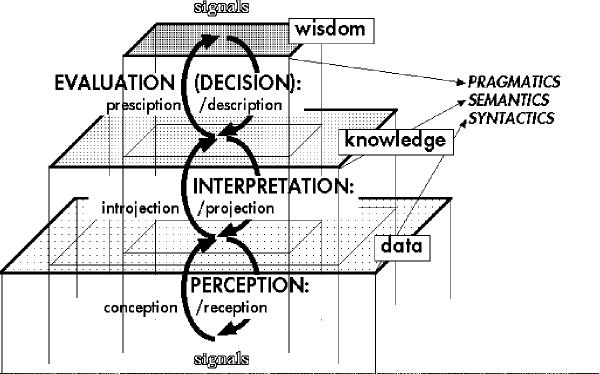

Abstracts of ISSS 99
Søren Brier
Royal Veterinary and Agricultural University of Copenhagen Dept. Of Economy and Natural resources Section for method and project Work email: sbr@kvl.dk. Since the Second World War a universal informational paradigm has been developing as a supplement to the material-atomistic-mechanical and the energetic-thermodynamical paradigms. There is a growing plea for a universal information theory, lately supported by Tom Stonier's trilogy. The paradigm is either based on new concepts - like logical depth of information - built on a development of Shannon's entropic information concept. On Wiener's (and Schrödinger's) neg-entropic information concept uniting the entropy concept of thermodynamics with the informational entropy concept seeing objective information in nature - in a general evolutionary systems' ontology - as organizing "power". Ontologically, you can see rather mechanistically looking concepts as Stonier's or rather organismic views as Goerner's, but none of them having an explicit reflected ontology. Many researchers today use Bertalanfy's general systems theory without reflecting on its origin in organismic ontology. But one may loosely say, that the modern systems vision seems to be based on an evolutionary systems' view that combines matter, energy, and information as objective ontological components in an emergent dynamics. The hope is to explain qualia, life, and consciousness as emergent phenomenon as results of the evolution of material, energetic and informational systems. The modern versions often use non-equilibrium thermodynamics, non-linear systems dynamics, deterministic chaos theory and fractal mathematics as descriptional tools. But again there is seldom reflections on how they differ from a mechanistic view. The problem is whether this paradigm will ever get a reasonable and consistent description of the nature of meaning, signification and communication in living and social systems. From this end a communicational paradigm mainly based on Peirce's evolutionary, pragmatic and phenomenological semiotics, the cognition of living systems (ethology and biosemiotics), and pragmatic linguistics such as Wittgenstein's language game theory, and Lakoff's cognitive semantics has been developed within the last twenty years. It is mainly based on the study of the existence of meaningful communication in living and social systems. It looks into cultural historical dynamics and evolutionary ecology for explanations of the dynamics of signification and communication. In the form of biosemiotics its view is now penetrating biology as an alternative to both mechanistic and purely systems' dynamical explanations. Work has been made in biochemistry and organic chemistry, but so far not in inorganic chemistry and pure physics. But in Peirce's triadic objective idealistic philosophy feelings, qualia, habit formation, and signification are basic ontological constituents of ontology. This means that the communicational paradigm should be able to penetrate all the way through chemistry and physics. In my own Cybersemiotic paradigm I have attempted to unite the two paradigms by using the information concepts denying its objective character, but without going into a radical constructivism. With second order cybernetics I claim that reality is full of innumerable differences, but information is something created inside autopoietic systems in the moment that a biologically or culturally meaningful interpretant is established. Based on Peircian semiotics information is not seen as transferred through communication, only representamens are transferred. Information is partly recreated in the reinterpretation of signs by the receiver of intentional communication. Consequently, meaning and information are connected, but still seen as different items as pointed out by Luhmann. Items and actions can only become informative on the background of a field of meaning. But in the informational paradigm meaning and information are not connected and information is an independent objective entity. So another way of viewing the problem is to see the informational paradigm as 'bottom up explanation' and the communicational paradigm as a 'top-down explanation'. Further you could combine this with the epistemological stand that no final scientific explanations can be given on anything in this world. All we have - according to Niels Bohr and Thomas Kuhn - are complementary explanations working well in different situations. We will never get a full view. According to this we should not try to unite by manipulating basic definitions into unifying compromises, but instead continue to develop each paradigm to its fullest. But one of the consequences of this is that the concepts of meaning and information are defined in two completely different paradigms making the informational aspect of communication an objective and quantifiable entity completely independent of any meaningful interpretation from the recipient and any intent from the sender. In linguistics this opposition is seen in the view of analytical philosophy that semantics is a question of the represental truth function of a token where pragmatic linguistics sees meaning as coming from the use of signs and words in real life situations. The Cybersemiotic paradigm avoids this difficulty through
a non-mechanistic universal evolutionary semiotic approach to epistemology, ontology and
signification combined with a systemic and cybernetic approach to self-organization,
drawing among other things on Luhmann's theories of social communication. Thereby, in the
theory a semiotics of nature can be combined with pragmatic linguistics in a second order
approach that always reflects the role of the observer as the producer of meaningful
contexts that makes processes and differences informational. As Bateson stated:
Information is a difference that makes a difference and with Peirce we will say: by
creating an interpretant. Back ground literature Brier, S. (1992): "Information and consciousness: A critique of the mechanistic concept of information", in Cybernetics & Human Knowing, Vol.1, no. 2/3 , pp. 71-94. Brier, S. (1993b): "A Cybernetic and Semiotic view on a Galilean Theory of Psychology", Cybernetics & Human Knowing, Vol. 2, No.2, pp. 31-45. Brier, S. (1995):" Cyber-Semiotics: On autopoiesis, code-duality and sign games in bio-semiotics" in Cybernetics & Human Knowing, Vol. 3, no. 1. Brier, S. (1996a):"From Second-order Cybernetics to Cybersemiotics: A Semiotic Re-entry into the Second -order Cybernetics of Heinz von Foerster", Systems Research, Vol. 13, No. 3, pp. 229-244, 1996. Brier, S. (1996b): "The Usefulness of Cybersemiotics in dealing with Problems of Knowledge organization and Document Mediating Systems", in Cybernetica: Quarterly Review of the International Association for Cybernetics, Vol. XXXIX, no. 4., 1996, pp. 273-299. Brier, S. (1997b): "What is a Possible Ontological and Epistemological Framework for a True Universal 'Information Science'? The suggestion of a Cybersemiotics", World Futures, Vol. 49, pp.297-308. Brier, S. (1998a): "The Cybersemiotic Explanation of the Emergence of Cognition: The Explanation of Cognition, Signification and Communication in a Non-Cartesian Cognitive Biology " in Evolution and Cognition. Vol. 4, No. 1, 1998, pp. 90-102. Brier, S. (1998b): "Cybersemiotics: a transdisciplinary framework for information studies", in BioSystems 46, 1998, pp. 185-191. Brier, S. (1998c):"The Cybersemiotic Explanation of the Emergence of Cognition: The Explanation of Cognition, Signification and Communication in a non-Cartesian cognitive biology "Cognition and Evolution, Vol. 4. No.1., pp.90-102 Brier, S. (1998d):" Cybersemiotics: A suggestion for a Transdisciplinary Framework for Description of Observing, Anticipatory and Meaning Producing Systems" in: Dubois, D. M.(Ed.) (1998): Computing Anticipatory Systems: CASYS-First International Conference, Liege, Belgium, 1997, American Institute of Physics, AIP Conference Proceedings 437, Woodbury, New York, pp. 182-193. Goerner, S. J. (1996): Chaos and the Evolving Ecological Universe, The World Future General Evolution Studies, Volume 7, Gordon and Breach. Stonier, T. (1990): Information and the Inter-nal Structure of the Universe, Springer Verlag, Berlin, London, 155 p. Stonier, T. (1997): Information and Meaning: An Evolutionary Perspective, Springer Verlag, Berlin, London, 255 p
University of North Carolina at Asheville, 1 University Heights, Asheville, NC 28804, USA, Saybrook Graduate School, San Francisco It is unlikely, at least in the near future, that a unified information paradigm will emerge that incorporates both the objective sciences of information and the human sciences of experience. The reason is that the former deals in objective facts while the latter concerns subjective meanings, and neither can contain the other. What separates them is the old chasm that divides mind and body, recently rephrased as the hard problem of how subjective experience, termed consciousness, is so enigmatically and intimately tied to the objective world of extended reality and to the brain in particular. It would seem, however, that a truce, or even simpatico, might be achieved between the objective and human sciences if a common topology can be found which maps the attributes of both in a way that does not violate the properties of either. Since objective information is always conveyed by some physical carrier, it follows that the carrier, in this case some aspect of the brain and its processes, must allow a sensible resemblance (or mapping) to attributes of experience itself (though not necessarily in an obvious way). This in mind, it is reasonable to examine theories of brain function in hopes of finding one or more that hold the requisite potential. What would seem to be needed is a way for the brain to encode analogue aspects of experience, such as sensations and emotions, as well as performing logical operations involving categories, as exhibited in language. Computational models are weak in the former, though strong in the latter. Neural network models are the opposite, though offer hope for explaining categorical operations as well. At the same time they hold forth the possibility of a more veridical representation of the brain itself. Considered dynamically, neural network operations can encode analogue processes and also represent logical ones, though with some difficulty--a situation that seems quite human. Karl Pribram's holonomic approach deserves special note as a brain model that takes advantage of the neural network approach in a unique paradigm designed to represent the actual dimensions of subjective experience. Other more speculative approaches include recent models that draw on quantum physics either for their overall logic (Henry Stapp), or for working details of how the brain encodes experiential events (e.g., Stuart Hameroff and Roger Penrose). Fortunately, these latter approaches are not developing in isolation, but despite controversies within the neuroscience community are enriching each other in the laboratory and on the theoretical drawing board. Key words: information, brain, metaphor, model, subjective experience, analogue, computational [9976]
University of Illinois at Chicago, email: kauffman@uic.edu Virtual logic stands outside the logic of true and false and points to that domain from which Reason springs forth. This talk will discuss the theme of virtual logic in relation to second order cybernetics, process theory and the methods of paradox resolution (the Flagg Resolution) pioneered by James Flagg and the speaker. Our method of paradox resolution is a direct descendant of Ludwig Wittgenstein's injunction to solve problems as they arise. "...it is vitally important to see that a contradiction is not a germ which shows general illness." [L. Wittgenstein. Lectures on the Foundations of Mathematics. edited by Cora Diamond, Cornell Univ. Press (1976). Lecture XXI, p. 211]. In the Flagg resolution we give a method whereby one can take a seemingly contradictory entity at face value, modify the mode by which we indicate that entity (the way we engage in substitution and reference to the entity), and retain standard logical discourse. The practical consequence of this move is of great importance for the foundations of information science. On the one hand the Resolution is a formal move that allows the discourse to continue to flow forward. On the other hand the issue of deeper understanding is placed squarely in the hands of the person or observer in the system. The responsibility is in the hands of the observer. The mathematics is in the hands of the mathematician. Formal systems and computer systems are aids in the flow of communication, but the responsibility goes to the observer. It is the observer who initiates the creative process by distinguishing the space and indicating its contents. It is the observer who stands to gain or lose in the dialogue about consistency and continuation of the conversation. In Mathematics a theorem is proved when it becomes evident. The proof is not a matter of true and false; it is a matter of coherent indication. What is indicated is a collection of (from the stance of the mathematician) indisputable distinctions that cohere into the conclusion that is the theorem. Reason and logic are seen within this coherence. The theorem is not proved by logic or reason. The distinctions that constitute the proof are not a matter of dispute. They are agreed upon by the community of mathematicians, and are each reproducible by every individual in that group. It is exactly because proof goes beyond true and false that the gambit of proof by contradiction can be taken. The mathematical universe is not fragile. It will not collapse in the face of an apparent contradiction any more than the discovery of Russell's paradox caused bridges to fall. We stand on the other side of the watershed of Godel's Theorem. No single machine, nosingle formal system can encompass the acts of Reason. We must act responsibly in an endless creation of such systems and the patterns that can be generated with them. Any attempt at founding a general theory of information science -- especially those building on "objective" concepts of information -- must take these facts into consideration. [99152]
Institute of Design and Technology Assessment, Vienna University of Technology, email: hofi@igw.tuwien.ac.at In cognitive sciences, there is a divide between a naturalistic main stream and a culturalistic thread. The first one, known as cognitivism, comprises the symbolism and the connectionism which are based upon the assumption of the computability of cognitive processes, while the second one, the phenomenological-hermeneutic thinking, defies this very assumption and postulates, instead, features of cognition in their own right. Put together, both approaches are not supplementary in providing an appropriate picture of the phenomenon of cognition: With regard to the role experience is thought to play in cognition, either the tradition of sensualistic and empiristic aposteriorism is continued or, in a rationalist’s or in an "autist’s" manner, the existence of aprioris is suggested. Concerning the relation between cognitions and the objects they refer to, you either have to choose the representational stance of objectivism or the constructivistic, solipsistic, spiritualistic or platonistic view of subjectivism. And as to the intentionality of cognitons, causal relationships between cognitions are considered sufficient (causalism) or explanations which resort to attitudes of persons towards situations are deemed essential (intentionalism, "voluntarism"). That is, computationalism, on the one
hand, and phenomenology and hermeneutics, on the other, are extreme positions which are
one-sided and cannot be mediated as such. However, it is favorable to adopt another point
of view that tries to take up those aspects which are reflected in a right way. This seems
possible by applying the emergentist methodology of evolutionary systems. Thus, in human
information generating systems, perception may be looked upon as a concurrence of
reception and conception resulting in data, interpretation may be conceived as as an
interplay of "projection" (construction) and "introjection"
(adaptation) producing knowledge with meaning, and evaluation/decision may be the
collaboration of descriptive and prescriptive processes leading to what, eventually, can
be labelled as "wisdom" containing values, ethics, morals, as is shown in the
figure. 
Roberto R. Kampfner
Computer and Information Science Department College of Engineering and Computer Science, The University of Michigan-Dearborn Dearborn, Michigan 48128 The view of information processing as an aspect of the dynamics of the processes underlying function provides a uniform framework for the study of information and information processing at various levels of biological and human organization. This view is consistent with a broad notion of information and information processing that allows for the study of natural and artificial information processing within a uniform framework. In this paper we propose the use this view as a framework to analyze the role of information in practically any context. This framework is consistent with a broad notion of computation, one that ascribes some kind of computational power to any particular dynamic process. It can be used to analyze information-processing related issues at various scales of information processing in biological systems, and at various levels of biological organization [Kampfner, 1998]. At the biological level of human populations, for example, issues arising in connection with information-processing issues of social systems and, in particular, human organizations, can be studied with the help of this framework. Using a broad notion of computation that encompasses both natural and artificial computing we focus on a trait common to all purposeful dynamic processes: they use information to guide their behavior. The notion of computation used here ascribes computational power to any dynamic process in the sense that any such process computes at least its own dynamics. M. Conrad [1985] explained this idea in relation to a strong form of the Turing-Church thesis that asserts that any physical process can be simulated by a Turing Machine [Hofstadter, 1979]. The equivalence between dynamics and computation that the strong form of the Turing-Church thesis suggests can also be interpreted as conferring some kind of computational power to all physical processes. There are essential differences between algorithmic computation, and that performed by the physical processes. Most notably, while algorithmic computation is performed with a general-purpose computing device, a particular physical process performs a very specific kind of computation. A consequence of this is that the algorithms used for the simulation of physical processes are, in most cases, of a great computational complexity. In contrast with this, the computations performed by the physical processes themselves, since they result from the dynamics of such processes in a natural way, can be considered less computationally complex than their algorithmic counterparts. Another difference relates to the adaptability of information processing. According to M. Conrad's tradeoff principle [Conrad, 1985], in any information-processing system there is always a tradeoff between adaptability and programmability. The tradeoff principle places natural computing processes, such as molecular computing, which are inherently adaptable, and algorithmic computation, which is programmable, at the two ends of an adaptability-programmability continuum. Despite the specificity that in general characterizes the computational capabilities of physical processes, there is a trait common to all of them; namely, that all of them use information to guide their behavior in order to achieve their specific purpose. This common purpose and the notion of computation as an aspect of the dynamics of physical processes are what give uniformity to our framework. Of the many issues that viewing information processing as an aspect of the dynamics of natural and artificial systems helps us to analyze, this paper focuses on the study of the compatibility between artificial and natural computing in adaptive systems, such as organizations. Especially important, in this respect, is that the computations performed by physical processes are not only specific in purpose, but that the fact that they are part of the dynamics of these processes makes these computations highly compatible with them. Clearly, these computations can be said to support these processes in an effective manner. The paper will discuss issues related to this compatibility in some detail. References Conrad, M. "On design principles for a molecular computer'" Communications of the ACM, Vol. 28, pp. 464-480, 1985. Hofstadter, D. Goedel, Escher, and Bach, an Eternal, Golden, Braid. New, York: Vintage Books, 1979. Kampfner, R. "Dynamics and information processing in adaptive systems," BioSystems, Vol. 46, pp. 153-162, 1998. [9975]
Edwina Taborsky
Bishops University, Lennoxville, Quebec, Canada J1M 1Z7 This paper is focused around three questions. The first question - what is information? It is energy that is 'in relation with' other forms or processes of energy. The establishment of these relations means that energy is capable of 'informing', which is to say, interacting with other forms/processes of energy. All forms/processes of energy, whether within the physico-chemical, biological and conceptual worlds, are filiated within a semiotic process that catalyzes changes in energy states to establish relationships between these states and thereby transform energy into information. The second question - how is energy transformed into information? The basic postulate is that the universe consists entirely of codification processes that transform free or 'uninformed' energy into 'informational relationships' operating within hierarchically ordered, multiresolutional and interfiliated modules or aggregates of codal orders. Information is understood to operate as codified microstates of energy/matter and therefore, semiosics considers that all energy processes, independent of any consciousness or secondary articulation of their interaction, are, in and of themselves, of whatever scale and complexity -- informational processes. The semiotic transformation of energy to information is both a logical and a phenomenological process, and operates within both universal laws and local contexts. Does information, to be information, require an anthropomorphic or ontogenetic consciousness of that energy as information? There is a difference between referentiality (which supplies the measures of codification processes) and metareferentiality (which supplies an objective measurement or means of referring to that referential codification). Is metareferentiality necessary for the transformation of energy to information? My answer is that it is - but, is it a factor of ontogenetic processes, ie, operative within the phenomenology of the individual, or can it be subsumed, and operative only within the phylogeny, within the logical habitus of the species? Can metareferentiality operate as a factor of pragmatics, of the Aristotelian final cause and therefore, are there different types of consciousness - a local and a universal, a current and a future-oriented, a psychological and a logical? The hypothesis of this paper is that the transformation
of energy to information is an active process that catalyzes changes in energy state at
every level of organization, irregardless of symbolic consciousness, and that it
necessarily operates within an infinite, non-teleological, future-oriented or pragmatic
evolutionary process.
Koichi Hirano and Ray C. Paton
Department of Computer Science, The University of Liverpool, Liverpool, L69 7ZF, United Kingdom, email: koichi@csc.liv.ac.uk This paper discusses an internalist approach to the problem of simulating complex economic systems. The focus of the paper is to provide a view of an empirical system interpreted in the past progressive tense instead of the present tense. The linguistic progressive mode instead of the present mode can represent dynamic behaviours between agents inside a concerned system. Within this context, we argue that information production is about something being generated by agents of a system but not by outside observers, the interpretation in the past progressive tense could be good basis which cannot be ignored when one considers about information. The context of this study is as follows. When one describes an empirical system, whatever it may be, there are at least three linguistic modes available: the present tense mode, the present perfect and the present progressive. Any dynamic behaviour of subjects that is in progress could be in the mode of the present progressive tense instead of the (more commonly occurring) present tense. Let us quote an example by Matsuno (1997), "I am walking through a crowd and avoiding collisions with other people. Then, I can see that other people are doing the same. That is, I am walking through the crowd as collisions with other people being avoided. The statement of my walking in the present progressive tense makes others beside myself active agents, also. Of course, they are active observers." A significance of the present progressive mode is its multi-agentiality as any empirical systems are so. There is only one agent which can monopolistically describe the rest of observers as being frozen both in time and in space, both in the mode of the present tense and the present perfect tense. As a consequence, the aspect of any dynamical process between observers could be eliminated in these two modes. Therefore, to describe an empirical system in the present progressive mode is an important issue when one seriously attempts to see empirical significance. One point which does not convince us to employ the present progressive mode is that the principle of the excluded middle cannot be guaranteed in the present progressive mode a priori. Any process described in the present progressive mode is ongoing, but not yet finished. We, as those describing a concerned system, forcibly face this difficulty if we seriously consider the use of the present progressive mode. A possible way to overcome the difficulty could be to rely on an invariant property of a concerned system. The conservation law of energy or energy flow continuity would be a good example of such invariance. Observers inside the system can be taken to act so as to fulfil the conservation law a posteriori, which can be expressed in the present progressive mode. Apart from physical systems, economies also have such an invariant property. The maintenance of the monetary flow continuity of each observer or economic subject is a case in point. Apart from monetary authorities such as central banks, any economic subject is not allowed to issue bank notes, thus every economic subject except bank note issuers should maintain their monetary flow equilibrium through manipulating the intensity of outgoing flow and inflow. If one continuously failed, one would face bankruptcy, and would no more be an independent economic subject in the economy. The maintenance of the monetary flow continuity is the most principal process in the present progressive mode of our modern economies. This dynamics is, however, necessarily under-complete simply because there is no global co-ordination, in other words, each economic subject faces its flow disequilibrium indefinitely. Through this process, something can be fixed in the form of an irrevocable record. Several monetary records including the currency circulating in the market are available thanks to monetary authorities. Based on a non-disequilibrium macroeconomic model proposed by Matsuno (1978), the authors developed a network-flow model of macroeconomic systems. The model can reproduce action and reaction by macroeconomic subjects in the form of their decisions and their monetary flow disequilibrium as in the past progressive mode and by referring to several monetary records as a posteriori constraints. So far, about 50 years of records of the Japanese economy are simulated. Multi-agential systems are found to be highly fragile because the spatio-temporal horizon of the agents is finite (Matsuno, 1978). In this sense, it might be almost a miracle, take, for example, Japanese economy has survived so far. This paper addresses aspects of empirical significance how macroeconomic subject has been struggling for their survival, in order to provide empirical basis with the issue of information. References Matsuno, K. (1997). From his message in the FIS discussion email list on Fri, 12 Dec 1997 06:34:02 +0100 (MET), titled "Re: Information and Natural Languages". Matsuno, K. (1978). Nonequilibrium Dynamics of
Dissipative Systems and Its Application to a Macroeconomic System. IEEE transactions on
Systems, Man, and Cybernetics, Vol. SMC-8, No.7, pp526-533.
William S, Dockens III
Väringavägen 20 tr3, S-193 35 Sigtuna, Sweden, email: william.dockens@mailbox.swipnet.se The epistemologies, theories and applications of contemporary science and technology can be collectively and succinctly described as prototypes emerging from a multidisciplinary network. In the new climate, hierarchies either become ephemeral or disappear altogether. Mutual causality becomes the rule rather than the exception. Multidisciplinary and cross cultural cooperation are combining to rapidly replace relatively strict territorial boundaries of the past. Taken in concert, the consequences of these transformations on how information is defined and exchanged are profound. A primary difficulty is to formulate an approach that is both free of paradigm territoriality and as independent of arbitrary consensus as possible. One solution, a spectrum from common sense through biological and natural sciences, to business, political and military strategy is subjected to a general systems approach that includes problems of conflict, territoriality and compatibility. To minimize arbitrariness, information's problems, their consequences and their solutions are formulated within T. Givón's (1984) approach to syntax provides an optimal division of labor for the search for a generally accepted definition of "information". In addition to presenting a comprehensive picture of syntax, semantics and pragmatics as a unified whole, Givón's formulation of "the time-stability scale of lexical classes" facilitates a non-hierarchical approach essential to applications in both networks and natural environments. Three major conclusions, first social and cultural factors can nullify clearly demonstrable empirical facts. Second, the "Prisoner's Dilemma" is an artifact of specialization. Finally, a neuro mind pattern has emerged that might serve as a more organic, less mechanical basis for a photo computer system's reasoning. The Mindscape concept emerges as our link between the objective reality of mathematical biology and the personalities of individuals. Originally formulated by anthropologists to explain irreconcilable differences across cultural and epistemological barriers, this approach takes advantage of game theory connections to integrate the mindscape concept into general systems. The result is a biobehavioral equivalent to "personality theory", an equivalent that may well permit general systems to deliver things only promised by humanist philosophers and psychologists. Mindscape's greatest promise is its contribution to the resolution of conflicts between groups and personalities. Key words: Information, game theory, Jung, Tai-chi,
Syntax, ethnic-psychology.
Zhichang Zhu
Lincoln School of Management, Lincoln, LN6 7TS, UK, email: zzhu@lincoln.ac.uk Integrating a convincing ontological vision with a pluralistic epistemology into methodological guidelines for disciplinary and creative information systems design (ISD) has proved not easy. In the eastern context, the issue manifests itself especially problematic. Given the primitive, pre-scientific (mysterious?) outlook of eastern systems thinking on the one hand, and rigor empirical information science and information technology on the other, the intended integration appears immediately and profoundly challenging. This paper presents an attempt, the WSR approach, to address and tackle such a challenge. Drawing upon Confucianism, Taoism and contemporary OR/MS experience in the Chinese context, WSR has tried to enhance the ISD process by incorporating a few facilitating insights, which are purposively reconstructed from ancient Chinese thought, e.g., the differentiating-integrating Tao (Way), the complementary yin-yang (opposites), the bubbling lis (patterns), the cyclic I (transformation), the spontaneous wu-wei (non-forced action) and the golden chong (timely-mean). These insights have been intentionally deployed by ISD researchers and professionals to view ISD as an integrated socio-technological whole, to shape an ISD issue-task matrix, to guide spiral learning activity, to facilitate user-participation, and to indentify further research topics. The approach has proved useful in some
ISD projects in China. It is presented here to the FIS group and hence the wider IS
research community for the purpose of mutual informing, stimulating and learning. |
Last changed at: 02/02/02 02:02h.